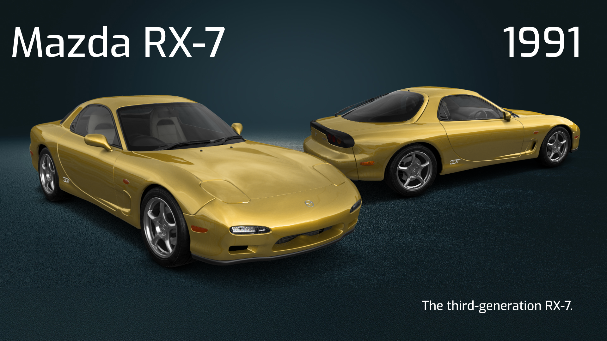
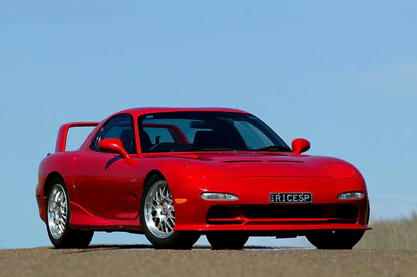
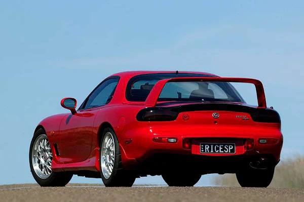

The Mazda RX-7 is a sports car which was manufactured and marketed by Mazda from 1978 to 2002 across three generations. It has a front mid engine, rear-wheel-drive layout and uses a compact and lightweight Wankel rotary engine.
The third-generation RX‑7, (sometimes referred to as FD, chassis code FD3S for Japan and JM1FD for the North America), featured an updated body design. Announced in October 1991, production began later that month before going on sale in December in the domestic Japanese market. Left-Hand-Drive export production began shortly after. The 13B-REW engine was the first-ever mass-produced sequential twin-turbocharger system to be exported from Japan,[33] boosting power to 255 PS (188 kW; 252 hp) in 1992 and finally to 280 PS (206 kW; 276 hp) by the time production ended in Japan in 2002.
For the third-generation RX-7, Mazda organised an internal design competition between its four design studios in Hiroshima, Yokohama, Irvine, and Europe. The winning design came from their Design Center in Irvine and was designed by Taiwanese automotive artist Wu-huang Chin (秦無荒), who also worked on the Mazda MX-5 Miata, with help from Tom Matano. The interior design, though, originated from the Hiroshima design proposal. Mazda's chief designer Yoichi Sato (佐藤 洋一, Satō Yōichi) then helped take the concept design to its final production form.
At launch, three option packages were offered; the unlabeled base model, the Touring and the R1 (renamed R2 in 1994). All cars were only available as a two-seater, unlike the previous generation which offered a 2+2 configuration in North America. All cars were equipped with the same sequential twin-turbo 13B REW engine. A five-speed manual transmission was standard and a 4-speed automatic was available on the base model and Touring package. A driver-side airbag and anti-lock brakes are standard as well. The Touring package included a glass moonroof, fog lights, leather seats, a rear window wiper and a Bose Acoustic Wave music system with CD player. The R1 (R2 in 1994–95) model featured upgraded springs, Bilstein shocks, an additional engine oil cooler, an aerodynamics package comprising a front lip and rear wing, faux suede seats and Pirelli Z-rated tyres. Cruise control was deleted on the R1.[40] The R2 differed from the R1 in that it had slightly softer suspension.
In 1994, the interior received a small update to include a passenger-side air bag, and a PEG (popular equipment group) package was offered. The PEG package featured leather seats, a rear cargo cover and a power steel sunroof. It did not include the fog lights or Bose stereo of the touring package. An automatic transmission was not available with the PEG.
In 1995, the Touring package was replaced by the PEP (popular equipment package). The PEP included a rear wing, leather seats, sunroof and fog lights, but did not have the Bose Stereo nor the rear window wiper. An estimated 500 RX-7s were produced for the 1995 model year. This would be the final year of RX-7 production for North America, as it was discontinued due to slow sales.
A special high-performance version of the RX-7 was introduced in Australia in 1995, named the RX-7 SP. This model was developed to achieve homologation for racing in the Australian GT Production Car Series and the Eastern Creek 12 Hour production car race. An initial run of 25 cars were made, and later an extra 10 were built by Mazda due to demand. The RX-7 SP was rated at 277 PS (204 kW; 273 hp) and 357 N⋅m (263 lb⋅ft) of torque, a substantial increase over the standard model. Other changes included a race-developed carbon fiber nose cone and rear spoiler, a carbon fibre 120 L (32 US gal) fuel tank (as opposed to the 76 L (20 US gal) tank in the standard car), a 4.3:1 final drive ratio, 17-inch wheels, larger brake rotors and calipers. A "three times more efficient" intercooler, a new exhaust, and a modified ECU were also included. Weight was reduced significantly with the aid of further carbon fibre usage including lightweight vented bonnet and Recaro seats to reduce weight to 1,218 kg (2,685 lb) (from 1,250 kg (2,756 lb)), making this model a competitor to the Porsche 968 Club Sport for the final year Mazda officially entered. The formula paid off when the RX-7 SP won the 1995 Eastern Creek 12 Hour, giving Mazda the winning 12-hour trophy for a fourth straight year.[42] The winning car also gained a podium finish at the international tarmac rally Targa Tasmania months later. A later special version, the Bathurst R, was introduced in 2001 to commemorate this victory in Japan only.[44] It was based on the RX-7 Type R and 500 were built in total, featuring adjustable dampers, a carbon fibre shift knob, carbon fibre interior trim, special fog lamps and a different parking brake lever


In Europe, only 1,152 examples of the FD were sold through the official Mazda network, due to a high price and a fairly short time span. Only one model was available and it included twin oil-coolers, electric sunroof, cruise control and the rear storage bins in place of the back seats.[46] It also has the stiffer suspension and strut braces from the R models. Germany topped the sales with 446 cars, while UK is second at 210 and Greece third with 168 (thanks to that country's tax structure which favored the rotary engine).[48] The European models also received the 1994 interior facelift, with a passenger air bag. Sales in most of Europe ended after 1995 as it would have been too expensive to reengineer the car to meet the new Euro 2 emissions regulations.
In the United Kingdom, for 1992, customers were offered only one version of the FD, which was based on a combination of the US touring and the base model.[46] For the following year, in a bid to speed up sales, Mazda reduced the price of the RX-7 to £25,000, down from £32,000, and refunded the difference to those who bought the car before that was announced. From 1992 to 1995, only 210 FD RX-7s were officially sold in the UK. The FD continued to be imported to the UK until 1996. In 1998, for a car that had suffered from slow sales when it was officially sold, with a surge of interest and the benefit of a newly introduced SVA scheme, the FD would become so popular that there were more parallel and grey imported models brought into the country than Mazda UK had ever imported.